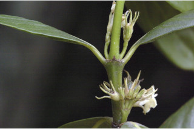
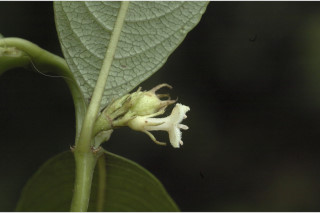
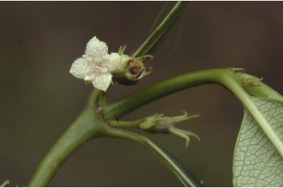
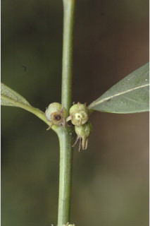
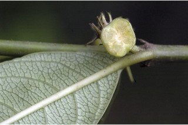
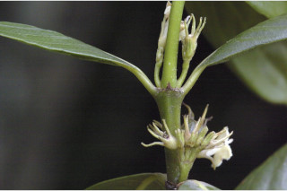
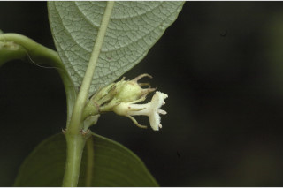
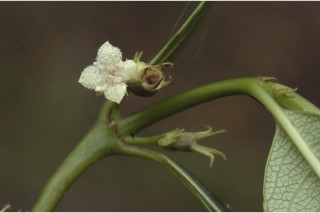
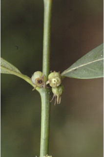
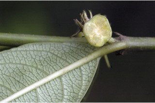

Large shrubs or small trees up to 4 m tall.
ದೊಡ್ಡ ಗಾತ್ರದ ಪೊದೆಗಳು ಅಥವಾ 4 ಮೀ. ಎತ್ತರದ ಸಣ್ಣ ಗಾತ್ರದ ಮರಗಳು.
Large shrubs or small trees up to 4 m tall.
பெரிய குத்துச்செடி அல்லது சிறிய மரம் 4 மீ. உயரம் வரை வளரக்கூடியது.
Bark brown, smooth.
ತೊಗಟೆ ಕಂದು ಬಣ್ಣದಲ್ಲಿದ್ದು ನಯವಾಗಿರುತ್ತದೆ.
Bark brown, smooth.
மரத்தின் பட்டை ப்ரவுன், வழுவழுப்பானது.
Branchlets subterete to compressed, glabrous.
ಕಿರುಕೊಂಬೆಗಳು ಉಪ-ದುಂಡಾಗಿರುವುದರಿಂದ ಸಂಕುಚಿತವರೆಗಿನ ಆಕಾರ ಹೊಂದಿರುತ್ತವೆ ರೋಮರಹಿತವಾಗಿರುತ್ತವೆ
Branchlets subterete to compressed, glabrous.
சிறியநுனிக்கிளைகள் குறுக்குவெட்டுத் தோற்றத்தில் கிட்டதட்ட வளையமானது முதல் தட்டையானது, உரோமங்களற்றது.
Leaves simple, opposite, decussate; stipule broadly triangular, interpetiolar, persistent; petiole to 0.6 cm long, planoconvex in cross section, glabrous; lamina 5.5-11.5 x 2.5-4.5 cm, elliptic to elliptic-ovate, apex acuminate with apiculate tip, base cuneate to obtuse, margin wavy, subcoriaceous, glabrous beneath; midrib slightly canaliculate above; secondary_nerves 6-8 pairs; tertiary_nerves horizontally reticulo-percurrent.
ಎಲೆಗಳು ಸರಳವಾಗಿದ್ದು ಕತ್ತರಿಯಾಕಾರದ ಅಭಿಮುಖ ಜೋಡನಾ ವ್ಯವಸ್ಥೆಯಲ್ಲಿರುತ್ತವೆ; ಕಾವಿನೆಲೆಗಳು ವಿಶಾಲವಾದ ತ್ರಿಕೋನಾಕಾರದಲ್ಲಿದ್ದು ತೊಟ್ಟುಗಳ ನಡುವೆ ಇರುತ್ತವೆ ಹಾಗೂ ಶಾಶ್ವತವಾಗಿರುತ್ತವೆ;ತೊಟ್ಟು 0.6 ಸೆಂ.ಮೀ.ವರೆಗಿನ ಉದ್ದವಿದ್ದು, ಅಡ್ಡ ಸೀಳಿದಾಗ ಸಪಾಟ ಪೀನ ಮಧ್ಯದ ಆಕಾರ ಹೊಂದಿದ್ದು ರೋಮರಹಿತವಾಗಿರುತ್ತವೆ;ಪತ್ರಗಳು 5.5-11.5 X 2.5 – 4.5 ಸೆಂ.ಮೀ. ಗಾತ್ರ ಹೊಂದಿದ್ದು ಅಂಡವೃತ್ತದಿಂದ ಅಂಡವೃತ್ತ -ಅಂಡದವರೆಗಿನ ಆಕಾರ ಹೊಂದಿದ್ದು, ಅಗ್ರದಲ್ಲಿ ಸಣ್ಣದಾದ ಮೊನಚು ಮುಳ್ಳನ್ನು ಹೊಂದಿದ ಕ್ರಮೇಣ ಚೂಪಾಗುವ ಮಾದರಿಯ ತುದಿ, ಬೆಣೆಯಾಕಾರದಿಂದ ಚೂಪಲ್ಲದ ಮಾದರಿವರೆಗಿನ ಬುಡ, ತರಂಗಿತವಾದ ಅಂಚು,ಉಪತೊಗಲನ್ನೋಲುವ ಮೇಲ್ಮೈ ಹೊಂದಿದ್ದು ತಳಭಾಗದಲ್ಲಿ ರೋಮರಹಿತವಾಗಿರುತ್ತವೆ;ಮಧ್ಯನಾಳ ಪತ್ರದ ಮೇಲ್ಭಾಗದಲ್ಲಿ ತುಸುವಾಗಿ ಕಾಲುವೆಗೆರೆ ಹೊಂದಿರುತ್ತದೆ;ಎರಡನೇ ದರ್ಜೆಯ ನಾಳಗಳು 6 ರಿಂದ 8 ಜೋಡಿಗಳಿರುತ್ತವೆ; ಮೂರನೇ ದರ್ಜೆಯ ನಾಳಗಳು ಎಲೆ ದಿಂಡಿಗೆ ಸಮಕೋನದಲ್ಲಿದ್ದು ಎಲೆಯ ದಿಂಡಿಗೆ ಅಡ್ಡವಾಗಿ ಕೂಡುತ್ತವೆ.
Leaves simple, opposite, decussate; stipule broadly triangular, interpetiolar, persistent; petiole to 0.6 cm long, planoconvex in cross section, glabrous; lamina 5.5-11.5 x 2.5-4.5 cm, elliptic to elliptic-ovate, apex acuminate with apiculate tip, base cuneate to obtuse, margin wavy, subcoriaceous, glabrous beneath; midrib slightly canaliculate above; secondary_nerves 6-8 pairs; tertiary_nerves horizontally reticulo-percurrent.
இலைகள் தனித்தவை, எதிரடுக்கமானவை, குறுக்குமறுக்கானவை; இலையடிச்செதில் அகன்ற முக்கோணமானது, இலையடிச்செதில் இருஇலைக்காம்பிற்கு நடுவே (இண்டர்பீட்டியோலார்) உடையது, நிரந்தரமானது; இலைக்காம்பு 0.6 செ.மீ. நீளமானது, குறுக்குவெட்டுத் தோற்றத்தில் பிளேனோகான்வக்ஸ், உரோமங்களற்றது; இலை அலகு 5.5-11.5 X 2.5-4.5 செ.மீ., நீள்வட்ட வடிவானது முதல் நீள்வட்டம்-முட்டை வடிவானது, அலகின் நுனி அதிக்கூரியதுடன் அதன் முனை நீட்சியுடையது, அலகின் தளம் ஆப்பு வடிவானது முதல் மெட்டையானது, அலகின் விளிம்பு அலை போன்றது, சப்கோரியேசியஸ், உரோமங்களற்றது; மையநரம்பு மேற்புறத்தில் அலகின் பரப்பைவிட சிறிது பள்ளமானது; இரண்டாம் நிலை நரம்புகள் 6-8 ஜோடிகள்; மூன்றாம் நிலை நரம்புகள் விளிம்பு நோக்கிய வலைப்பின்னல்-பெர்க்கரண்ட் போன்றவை.
Inflorescence axillary cymes; flowers white; pedicel 0.6 cm long.
ಪುಷ್ಪಮಂಜರಿಗಳು ಅಕ್ಷಾಕಂಕುಳಿನಲ್ಲಿನ ಮಧ್ಯಾರಂಭಿ ಮಾದರಿಯವು;ಹೂಗಳು ಬಿಳಿ ಬಣ್ಣದಲ್ಲಿರುತ್ತವೆ;ತೊಟ್ಟು 0.6 ಸೆಂ.ಮೀ ಉದ್ದವಿರುತ್ತವೆ.
Inflorescence axillary cymes; flowers white; pedicel 0.6 cm long.
மஞ்சரி இலைக்கோணங்களில் காணப்படுபவை, சைம் வகை மஞ்சரி; மலர்கள் வெள்ளை நிறமானது; மலர்காம்பு 0.6 செ.மீ. நீளமானது.
Drupe, globose, surmounted with persistent calyx lobes; seeds 4.
ಡ್ರೂಪ್ಗಳು ಗೋಳಾಕಾರದಲ್ಲಿದ್ದು ಅಗ್ರದಲ್ಲಿ ಶಾಶ್ವತವಾದ ಪುಷ್ಪಪಾತ್ರೆಯ ಎಸಳುಗಳನ್ನು ಹೊಂದಿರುತ್ತವೆ;ಬೀಜಗಳ ಸಂಖ್ಯೆ 4.
Drupe, globose, surmounted with persistent calyx lobes; seeds 4.
உள்ளோட்டுத்தசைகனி (ட்ரூப்), கோள வடிவமானது, கனியின் நுனியில் நிரந்தரமான புல்லி இதழ்கள் உடையது; விதைகள் 4.
 








